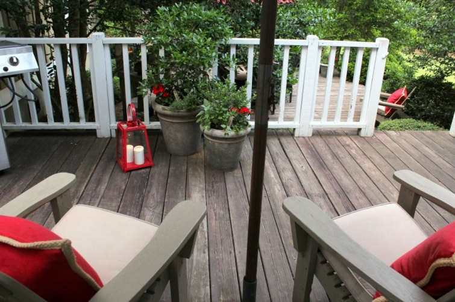

.png)
.PNG)
.PNG)
.PNG)
.PNG)
.PNG)
.JPG)
.JPG)
.PNG)
.PNG)


It needs some work right now. We said good-bye to all our students last Friday, and yesterday was the race-to-finish-all-the-paperwork final day with teachers, so hopefully I can make some time to work on that small garden soon (along with all the exterior painting work that needs to be done.) But I did manage to work on the pots on the back decks over the weekend.
The pots have hollies and boxwood growing in them, and every summer I plant geraniums, sweet potato vines, and lantana in them. This year, I decided to change it up some by planting herbs with the geraniums.
 I love my new herb markers. They are wooden stakes, so I don’t know how well they will do in the soil, but we will see. Taking on an old-worn-look is definitely not a bad thing in my eyes. 🙂 (Spraying them with some kind of sealant might be a smart thing to do though.)
I love my new herb markers. They are wooden stakes, so I don’t know how well they will do in the soil, but we will see. Taking on an old-worn-look is definitely not a bad thing in my eyes. 🙂 (Spraying them with some kind of sealant might be a smart thing to do though.)
Our deck areas are on two levels. Those pots were on the upper level where the grill is located. Now let’s go down to the larger lower deck.
More pots and herbs are on that deck too, along with another adirondack chair and our picnic table. I decided that since I was planting so many herbs, it might be nice to have a meal that utilized all of them. So viola! Our herb meal for dinner on the deck was born. 🙂
Normally I think of green and white for garden parties, but I guess those red geraniums made me bring out the red plates.
I used some small plants in peat pots on the table with kraft paper labels I lettered, and I also hand lettered some names of plants around the border of the kraft paper runner. The citronella candles helped to keep some of the insects away.
Here is the menu for our herb-inspired meal:
The fruit salad was simply cut up watermelon, cantaloupe, and strawberries with mint leaves mixed in. The grilled chicken with herbs was a recipe from here. (I would suggest adding a good bit of salt to the recipe for the marinade. It needed it.) The potatoes were a Barefoot Contessa recipe available here, but we did not slice the potatoes the way she does in her meal. Ours are simply chopped into pieces. I used my baked tomato recipe from here. And the wonderful cheddar garlic biscuits were a mix from Walmart that is delicious. (Read about here.) Yes, a mix that is delicious!
Sorry for the fuzzy photo…the food was ready and we wanted to eat! 🙂 The potting bench made a perfect place to serve beverages.
Lemon slices and mint leaves were added to both the water and the sweet tea to continue with the use of herbs.
And again I did a little hand lettering on kraft paper there. (The top of the potting bench is not real pretty – after all it is a potting bench that has seen its share of dirt!)
You might remember on our recent trip to Savannah we stopped in Back in the Day Bakery and tried out a variety of their yummy foods. I loooooved their lavender shortbread cookies and thought they would be the perfect dessert with ice cream (what else?) for this meal. Here is a link to the recipe for them. (Yes, the ice cream was melting in the heat here while I was taking this photo.)
Now I don’t want you to get the impression that I did all of this by myself. No way. I did prepare the baked tomatoes, set the table, and cleaned up the potting bench, but while I was working on the plants and things outside, our daughter prepared the chicken for grilling, baked the cookies, mixed up the salad, and made the biscuits. One of our sons prepared the potatoes, and my husband and other son were busy putting out pine straw in the back flowerbeds. So it was definitely a family affair. 🙂
And now something for you. Because I am a blogger, it seems that weekly (sometimes daily!) I am sent emails from companies wanting me to do a post on their products. It has been everything from women’s clothing to ceiling tiles to blankets to rug pads to…you name it. And although many of these may be perfectly fine products, I am p-i-c-k-y. I have said, “Not now,” to every single one because I have not felt like they fit with the style you are accustomed to seeing here. But a few months back, Donna at Timeless-Settings sent me an email asking me to simply look at their site to see if there was anything that might work with my style of blog. I was leary, thinking…Here we go again. But oh my goodness I was wrong! There were many things on her site that I loved. She asked if I would like to do a giveaway with any of them, and here is what we came up with just for you. 🙂
Recognize the wooden tray of pots from my potting bench above? Yep. She is giving a set of those to one of you. I love how the pots look old and worn. They are beautiful…truly. And that is not all. She is also including the wooden glass topped box of herb markers too! There are 9 different stakes in the set.
I normally just ask that you leave a comment to be entered in my giveaways, but because this is a sponsored post, I am asking you to do a little more this time. Please visit their site at www.timeless-settings.com and browse through the many items you find there. (I especially loved all the garden items. 🙂 ) And then come back here to leave a comment telling what item(s) you like there. The contest will remain open until next Thursday night, June 5, 2014 at midnight. I will do a random drawing from the comments after that. Then Donna will ship out the goodies to the winner.
I also want to let you know this post is the first of my series on gardening to officially kick off the summer, so if you love anything related to gardening you will want to check out the next few posts. You may enter the contest once with each post if you will visit their site each time. I look forward to seeing which items you like from Timeless Settings, and I hope to see you back here soon.
Until next time…

***Giveaway has closed. Congratulations Amy!***


.PNG)
Hi Kelly,
I was driving myself bonkers for days, trying to remember were I saw the idea to plant geraniums & herbs together in the past couple of weeks. I remembered that I liked this idea to add some color to my herb pots & still have be utilizing them as a decorative & useful at the same time. It was that I had purchased or received garden magazines or books, & also about the same time all the bloggers I read had a gardening theme going on. Seriously, I could picture all your pics but for the life of me could not remember where. Took my teen to say, “Well if you didn’t totally delete the email, do a search under herb & geranium & see what pops up”. Can we say “DUH”, it was the second post in the search. And yes, I’m just getting to planting now….May this year was having bouts of cold snaps, & this gal only plants once. So now that the big pot mystery is solved, pots, & yes the veggie garden will finally get planted. A little late, but fingers crossed winter won’t be in such a hurry to come back. Now on another note I also like Timeless Setting. Thanks for mentioning them. I too appreciate the fact that you don’t advertise many stores. I really enjoy your blog for the simple fact that you always write about your home or places, or your projects.
———————————————————————–
Oh dear! Cynde, I am sorry it was driving you crazy. Glad you found the post. I am also glad you commented about this though. I notice that some bloggers pin the same image over and over again on Pinterest, and I have always thought that was crazy (to the point of being annoying.) But if I had pinned an image from the post more than once, you might have more easily found it (if you happen to follow the blog there.) I will keep that in mind.
I do think the late cold everywhere has had an affect on planting. My father’s vegetable garden is going to be harvested much later this year. Good luck with all your planting!
Kelly
I was skepital about looking at another online store. I must say I was pleasantly surprised. I would have a hard time picking one or two favorite things, because I saw a lot of neat things that I could use in my home or give to my hard to buy for mother! I will certainly tell other about Timeless Settings. Your posts always inspire me and I appreciate all the hard work you put into your blog! Happy summer to you!
Oh my goodness, I love the french planter and the chicken wire planter!! They are so fun! Thanks for participating in the giveaway, and glad you are not participating with every company that asks you to do giveaways/sponsored posts. 🙂
I would like two or three of the Gold Designer Style Decorative Pillows. They would look great in our master bedroom!
I love all of the red! My favorite thing is your writing on the craft paper on your table, of course. You are just too creative! I am glad you told us that your family helped prepare the meal because I was feeling a bit inadequate yet happy that your kids help out. I am glad you are not endorsing every company that knocks on your computer screen… but Timeless Settings is a great exception. I love their galvanized items. Pottery Barn does need to pay you. I love their items that pop up in your decorating, the pillows and the lantern to name a few. I love the gardening, herb theme you have going on. Thank you!!!
Oh what a wonderful outdoor gathering! And great giveaway – love the herb markets and the pots in a caddy!
what lovely items on this site. I like the round mirror with the bird accent….but I also love the Herb crate with the pots that you picked…… my fingers are crossed!!! I have some thyme and basil sitting on my potting bench that need to be planted!!!!
I love your home and style, Kelly! I had the BEST time browsing through the lovely items. I especially liked the yardstick produce boxes.
Love the Crown Wall Hooks. Thanks, Kelly, for another wonderful giveaway!
I really like the Owl Trio and the French Cement Garden Pot Planter. Thank You for such a lovely giveaway!
I love the chicken wire planters. The wire baskets with hooks are ideal for organizing my gardening stuff. There are two adorable mercury glass jars with lids for the powder room. Thanks for sharing! Great place to shop.
School is finally out so here I am catching up on my favorite blogs. I have missed Talk of the House!! What a lovely garden setting you have. Sometimes the simple touches are the best. I just love the craft paper used in place of lines. Very nice!!
What a beautiful table setting, and I LOVE your yard, what I could see of it. are those woods in the background? wonderful!
I love everything that Timeless Settings carries but especially love the Wire Storage Basket Set of Three.
What beautiful photos! The meal looks delicious and healthy, love how creative you were.
My favorite items from Timeless Settings are the hanging bird feeders and the fruit and vegetable bowel!
I love the ideas and creativity you came up with in this post! I like the Black and Ivory Silk Zebra Feather Filled Decorative Pillow and the Two Tier Vegetable Stand.
Love this post! Love this blog! Could you tell me where you got your outdoor dining set? I love the black wicker chairs and the table. Beautiful dinner setting – you are a terrific stylist!
Everything looks lovely as usual! What a great idea for a herb garden. Putting them in the pots makes it convenient to get to them when you want them. Love the table! The hand written runner looks great! Love it! I need to get to work on our porch and deck! Hope you enjoy your summer! I know you are looking forward to it!
As usual,your table, deck, & decor are so lovely and so very inviting! Thank you for the link to a site full of wonderful things! I like so many of the treasures at Timeless Settings, but the one I must add to my deck is the bird cage planter–adorable! The herb markers & pots are fabulous!
What a lovely dinner on your deck! Love all your red accents.
I visited Timeless Settings website; I especially like their garden planters! They have a lot of great looking decor items, too.
Kelly,
Timeless…What’s not to love? I especially love the garden items, baskets, and reasonable prices. I am glad you posted the site “Timeless Settings.” I even love their name! After almost forty years of marriage, I have certainly found great value in the word timeless. Sometimes you (I)have to learn things the hard way, but at least the lesson has been learned. Buy “timeless” items (furniture, dishes, accessories, etc.) for your home. They never go out of style, and it will be money well spent. That is just one of the many reasons I love your blog. Your home, both inside and out, is simply timeless. Reading and browsing your blog brings me SO much joy. I have gleaned many inspiring ideas. I get excited each time I see a new post, and I usually save it until last when checking my email because I want to relish every minute of it. Thank you, Kelly, for your time and enthusiasm and for all the things you graciously share with us that make a house timeless, exquisite, and truly a home. Yours is the epitome of those very things.
Love the Cottage Style Bird Feeder from Timeless Settings – it’s adorable. Would use it just for decoration on our porch. One can never have enough bird houses, right?
Lovely items at Timeless Settings! A ceramic pot with birds perched caught my eye! Thanks for the opportunity! 😉
The herb markers and the box are my favorite too. I love our herb garden. Basil, parsley (Flat leaf and curly), thyme, sage, and Greek oregano are my favorites. Wish I had better luck with cilantro! I dry (in a huge dehydrator) most of my herbs but also have frozen some in olive oil and butter to use later. I found a citrus herb blend to try this year. Most of my lavender didn’t make it through our bitter cold winter so I need to replace that. Which reminds me, I better go water the garden!
Love, love, love my herb garden. So enjoyed seeing your beautiful outside space. Such creativity. Those table settings were perfect!
First of all, I love your site. I’ve been enjoying all the things you do for about 2 yrs. I’ve never left a comment until today! Timeless Settings had many things that caught my eye. I am a Bird Person, so I was drawn to the Bird Easel Cookbook Stand and the Felted Bird Trio. They are harlious! Loved the Acorn Key Holder and all the garden items. Enjoyed browsing the site. I’ve read where you are a teacher. I taught for 27yrs. Let the Summer Fun Begin. Enjoy your much needed break!
Love the Timeless Settings site and especially all of the vintage-look planters as well as the cute storage bins. Like you, I’m into my gardening right now…we downsized from a home,with a big yard to a three-story row house and I have a tiny front garden and a balcony/deck to plant. It’s not much but manageable and you’ve now inspired me to plant a few herbs along with flowers and the ever present patio tomatoes! Thanks for reminding me!
Everything looks amazing!
I love the red hanging bird feeder. It has such bright, cheery charm!
Hey Kelly, I agree with you, Timeless Setting has many great items. I love all the mercury glass and all the planters. I really like the French wooden box planters, our daughter is getting married in October and I think they might work with her idea for the flowers for the tables.
I love everything in the giveaway. On the website I liked the glitter birds and the antique style bud vases among other things.
Thanks for the opportunity to win
Kelly, I have enjoyed your blog and seeing your beautiful home. Where did you get your lovely black table and chairs that is on your patio? Thanks. Mary
I love using herbs from my herb garden. Timeless settings has some great items that are reasonably priced. I liked the two tier vegetable stand, little bird mail holder and how cute would the dog magnets be on my note board.
Thanks for the link to timeless settings. I am always looking for reasonably priced, different things for both the house and the garden. Loved the terra cotta pots with wire caddy. I also liked the wire buckets. Sometimes they are a good alternative to baskets.
Your dinner and decor were lovely! I visited the site and there were so many things that I really liked! I especially liked the turquoise blue tumblers and the vintage style salt and pepper shakers. Also loved the chicken wire planters!
Your garden party looks absolutely fabulous. The food looks delicious!! There are so many things on Timeless Settings that I love. I really love your garden herb stakes and the antique style storage baskets.
I really like the botanical serving tray! All round great stuff. Thanks for introducing us to the site!
So many beautiful items to choose, but that Terra Cotta Plant Urn stole my heart.I am definitely using your Herb Menu for my husband’s birthday dinner this weekend. Thank you for your many visual treats you share with your readers. I have added your home to my Neighborhood Fantasy.
I like bird things so one of my favs is the “Double Basket with Bird”. So charming.
You created a wonderful party environment. I am in awe.
Kelly,
I love the decks and the plants you’ve selected for each space. Your outdoor barbecue is magazine worthy and it’s great that the entire family pitched in. All of the food sounds and looks delicious.
What a great site. I will bookmark Timeless Settings for future gift buying. I love the Terra Cotta Pots and Wire Caddy…hope I win. 🙂
Enjoy your weekend.
Karen
Oh my, there are too many things to list that I liked at this store. I loved the hanging bird feeders, the blue crown juice glasses, the vintage soap holder, and the wire cloches. Their prices are very good.
Your deck looks great with your herbs planted with the beautiful geraniums. I don’t know how you find the time and teach school too!
Oh, what a cool website! I love the turquoise blue crown juice glasses, and they would go with my collected assortment of turquoise and green pots on my little deck. My potting bench is white and I love how you used the paper on yours. I would use the blue wire storage basket to hold dinner stuff!
You’re amazing and your blog is amazing! I so enjoy viewing the wonderful photos, reading about your family and in awe of your creativity and energy!
My favorite item on their website is the copper glass votive with heart design. I plan on ordering a dozen of them to use in our home!
Hi Kelly! What a cool site Timeless Settings is! So many things I wanted. I loved the little birdbaths, especially the ‘Sunflower’ one. Also loved the chalkboards and wire baskets. She has good prices as well. As I love herbs I sure would love to win the wooden markers! Thanks for the chance and I do love your blog!
Donna
I’ve got another half week of school left and I am running sooo far behind on my garden! I do have my porch urns finished, but I need to get my “crew” moving on mulch & annuals. (I think I can bribe them with our upcoming vacation.) I love the Orleans square planters on the Timeless Settings website, as well as the wire & galvanized pots. Planning on catching up on your great blog on my vacation (porches & tea, please!)
Beautiful post Kelly…as usual. I love the herbs planted with the hollies and boxwood…such a great idea. The red geraniums just whisper summer to me…I love the colors red,purple, and yellow together for these months. Your blog is chock full of inspiration and I really think you need to do a book about your house and your decorating inspiration!! Perusing Timeless settings, I of course wanted everything…thanks for introducing the site to us!! I especially liked the beautiful bird bookends…..so delicate and pretty. Thanks for your inspirational blog Kelly…one of the joys in my day is a new post from you!! : )
Love your post. We have such similar taste!
What a sweet website. There are so many wonderful treasures. I particularly love the wire baskets!!
There are some fun galvanized planters at Timeless Settings.
Hello Kelly,
I enjoy sitting down after my work day & looking at your beautiful home & garden. The photography is beautiful.
I hope I am responding to your message about the sponsor store giveaway. What lovely items for sale. I especially loved the Veranda Bird feeder in the garden section of the mail order store.
Thanks for sharing.
Lori
Lovely idea for herb dinner! Timeless Settings has so many useful and beautiful things. My kitchen is calling for that tourqoise and iron tray.
Kelly,
I love the items at Timeless Settings, the wire baskets especially, the bird houses and pillows too.
I love your table settings. How many porches do you have? I am doing good to get one deck and a front porch done…..still don’t have my flowers planted. I think I did better when my son and daughter were little. God bless your energy and creativety.
Jeanne
Love reading your blog and following your adventures. Your posts inspire me to do new things around the house. I like the Veranda Birdfeeder.
Kelly,
LOVED this post! I’m going to fill some pots this weekend like yours with geraniums, herbs, and boxwood. I also like your wicker chairs. Are they black or dark gray? I checked out Timeless Settings and especially like the garden and chalkboard items. Have a GREAT summer. I’m a retired elementary teacher and remember how FAST the time goes.
Sharon
your herb inspired meal looks so pretty and the recipes are perfect for a summer meal…i can’t wait to make the chicken and fruit. we made our first trip to the local farmer’s market a couple of weeks ago for squash, tomatoes and cantalope….sooo good with pork chops on the grill!
i checked out Timeless Settings and they have some great items at good prices too! if i won i think i’d select the wood plant markers, i’ve been wanting some for quite a while.
looking forward to ALL of your garden posts!
Timeless Settings has a few things that might be calling me. The price point is reasonable. I love your choices. I was hunting for the herb markers but didn’t see them. Maybe I missed them? I like your choice of the boxed pots too. I will be ordering the trio chalkboards. They would be fun markers for buffet food, don’t you think? Your herb themed dinner looked so inviting and the fare scrumptious as usual. Did I miss something? Is that a new patio dining set? I love it, I want it!! I currently have black wrought iron with red cushions and umbrella. I am always guaranteed a “drool moment” when visiting your blog. Your post delivered!! Herbalious!!
Debra
Those gorgeous wire baskets on Timeless settings are beautiful. Thanks for introducing us to that website. And thanks for the giveaway.
Somehow I missed your posting on your herb garden in the earlier posting? So I had a lot of catching up– which was loads of fun!! Enjoyed seeing your beloved beagle. Then I hopped over to the wonderful Timeless Settings! My, this has your endorsement written all over it– my favorite things were anything with birds, baskets and garden pots! I also like seasonal items. I think you are on the right track with this company because it speaks “Kelly” and your followers plus the prices are great! Made your baked beans and now we call them “Kelly’s Beans!”:) I am going back to browse some more. I really try to raise herbs but haven’t had much luck — must be this sandy soil at the beach?!
Love your post, you’re putting me in the mood to plant flowers. I truly love the double bird planter. Thanks for posting and sharing with us.
HI Kelly,
Thank you for introducing us to Timeless Settings. What a lovely grouping of garden/home products. I love the wooden cutlery holder. It reminds me of an antique toolbox that I inherited after my Grandpa passed away. It looks just like it! I loved so many of the items – I will bookmark the website for the next time I need a really cool gift 🙂
Megan
I had to bookmark Timeless Settings ! Lots of favorites ;)Fall is my favorite time of year and I love decorating in the fall so I think little acorn key holder is my favorite.It makes me think of the little squirrels collecting their nuts in my yard,getting ready for winter. Kelly~ I must tell you,I love your website ! You have inspired me with your decorating skills and I love trying your recipes.Thanks !
You can come set my table anytime…looks just gorgeous. I checked out the web site and couldn’t believe what wonderful prices they have on their items, I guess the one thing that caught my eye immediately was the $13 Pear serving tray, I could really use one. Thanks for sharing and for having a great give away.
Gardening feeds my soul, so that is the first section that I looked at. My favorites are the white terra cotta owl and the bird feeder that has an umbrella -so unique!
You make it look so easy Kelly! You have the magic touch!
So many wonderful treasures from Timeless Settings. I too loved the chicken wire planter and adore the Rooster tray. Our small downtown have roosters that roam the streets so we protect them as if they were our pets! Thank you for all your inspirations!
Oh, my goodness. I love your blog; have been following it ever since I found you. Your taste is wonderful. I check your blog daily – can’t wait to see if you have something new. Your home & what you do for your family is my favorite but I appreciate your sharing your travels with us also. I really enjoyed Timeless Settings. My fav was the sweets container. Will order as soon as I get off your blog. Adorable. The garden items are great also — actually, loved it all. It’s on my favorites bar now.
Kelly,
I love your sprinkling of herbs around in planters! I do the same. I have tons of lavender (the edible kind) and lemon grass planted this year. I’d love to put more herbs in our garden as well. I did go over to Timeless Settings and look around a bit. The hanging bird feeders are lovely but my favorite item has to be the wooden herb markers. Thanks for sharing!
Hi Kelly,
Really enjoyed the combination of colors and textures for your patio…very relaxing! Love your patio furniture too:) I checked out the Timeless Settings website. I like the wooden utensil tray and the cookie jar.
Truly enjoy your blog! Enjoy your summer.
Deborah
Kelly,
I loved it all! Your herbs, garden area, table setting, menu, and your porch and all those extra things you do so beautifully.
I will enjoying looking at this post again and again! Thank-you for another great post!!!
Marlene
I loved the pink laquered tray!! Not for gardening, but it would make me happy when I come inside.
I love the turquoise and iron serving tray in “kitchen.” My herbs are doing great. I’m growing rosemary, sage, nutmeg geranium, and arugula.
Well, I took a look at Timeless Settings and loved all of it! Great prices too..I sure like the jewelry holders, bird feeders and everything else!
I love all your posts! Always such an inspiration! (Loved your Memorial Day post! I made your baked bean recipe for our family gathering!) I love the herb markers but I also love the Terra Cotta Round Pot Urn! I think it would be great used on a buffet to hold ice or drinks!
Oh! What was not to love in ANY category at Timeless Settings? It was hard to narrow down, but I think if I were to list them in order, it would be the Garden Pot With Bee Accent, Hanging Bird Feeders, Acorn or Turtle Key Holder; and the Bird, Botanical or Floral Coasters.
Thanks for this beautiful blog. My sister in Pittsburgh (and, yes, she will most likely comment as well) sent me your link. I look forward to seeing your beautiful take on life. She and I recently commented how you somehow must share some of the same DNA. The recipe for baked beans was so similar to one passed down to us from our mother and her aunt before her…
Oh how I want to be just like you! 🙂 I absolutely love all your pots and herbs as well as the meal you served. And I almost fell out of my chair when I saw your outdoor table and chairs. I have had my eye on that at Home Depot for the past year and would love to have it at my home. Definitely showing that to my husband since I talk about your blog all the time. Looking at all the Timeless-Settings items what is there not to love. I love it all but especially the tin planters with the chalkboard labels. The cute turtle key holder and my favorite of course are the herb markers.
I love your little herb pots but I lso liked the Scalloped Double Tin Bucket. I hope I win!
I am in love with the galvanized tin pitcher pot! I keep a bucket of rain water to water the plants on the porch & steps and have been using an old enamelware ladle, but this would be even better….
Oh, how I love your blog! Your posts inspire me to share hospitality with my friends and loved ones. I loved Timeless-Settings website. Had never heard of them before and loved so many things. My faves were the galvanized tin pitcher pot, the garden pot with bee accent and a striped silk feather filled decorative pillow in my favorite shades of blue was to die for. Thank you, Kelly! Keep inspiring!
Diana
Ahh Kelly what a gorgeous post!!! Love anything to do with herbs.
Your dinner sounds so good.
I’m working on my herb bed too. I’m wanting to get some scented geraniums also. I love the delicate little flowers and the beautiful scent they give off as you brush against them.
I love the website and bookmarked it.
I love the 16″ ceramic wire bird planter,adore the scalloped double tin bucket and the tin planters with chalkboard labels. I like the pots and herb markers too so it would be nice to win those. Crossing my fingers. Thank you Kelly. Have fun digging in the dirt. Blessings, Becky